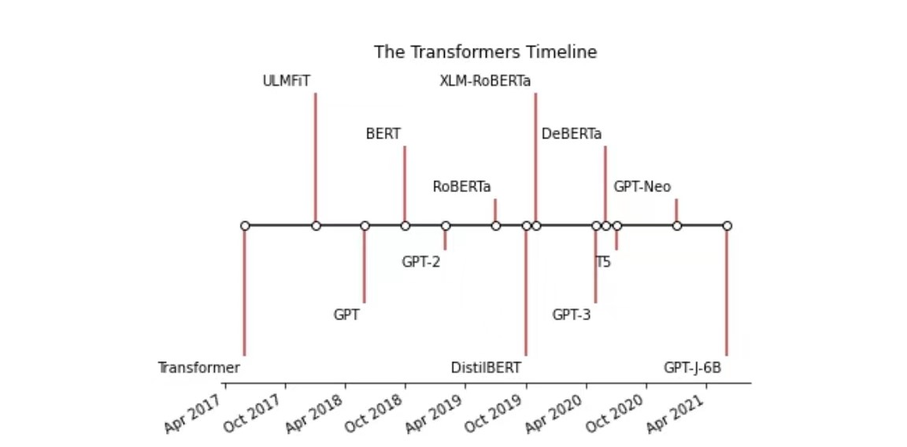
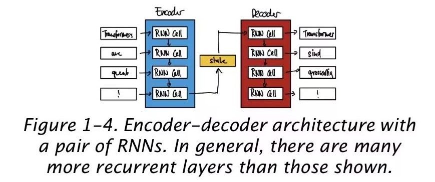
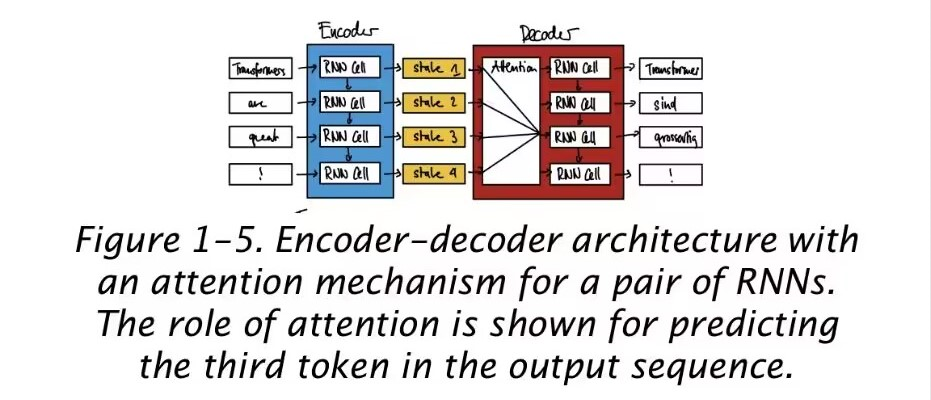

Pytorch
https://baomidou.com/代码见(ssmAjaxUpdate_Delete)：https://github.com/AbhamsterBall/mybatis-learning-projects ### 文档及搜索 https://pytorch.org/docs/stable/generated/torch.nn.CrossEntropyLoss.html#crossentropyloss ### Transformers来源及流行模型 > 来自于 attention, transfer learning, and scaling up neural networks 的兴起 > Transformers 时间表如下：  ### 核心 - 编解码框架 - 通过对hidden state的循环输入输出 来获取结果 - 但是很难处理长句子 - 注意力机制 - 解决长句的处理，让其只专注于其中几个hidden state - 传递式学习 ### pytorch对一般张量的处理[自然语言模型最终用到的数据形式] 参考书目：Natural Language Processing with Transformers > 简单来说，就是把数据向自己预期的数据方向靠近 ``` def train(x, y): input_size = 784 # Assuming the input size required by the model is 784 # Generate random input data within the required range X = torch.randn(x, input_size) # Creating random data with shape (x, 784) y = torch.empty(x, dtype=torch.float).random_(y) # 标签，来自官方文档 model = nn.Sequential( nn.Linear(input_size, 200), nn.ReLU(), nn.Linear(200, 10) ) loss_fn = nn.CrossEntropyLoss() optimizer = optim.SGD(model.parameters(), lr=0.01) # Assuming y is a tensor containing the target labels for epoch in range(10): for i in range(len(X)): y_pred = model(X[i]) loss = loss_fn(y_pred, y) # Ensure y[i] has proper shape for CrossEntropyLoss print("epoch: {}, i: {}, loss: {}".format(epoch, i, loss.item())) # print loss # Before the backward pass, use the optimizer object to zero all of the # gradients for the variables it will update (which are the learnable weights # of the model) optimizer.zero_grad() loss.backward() # compute gradient of the loss optimizer.step() # let optimizer to update parameter ``` ### 语料库下载 https://zhuanlan.zhihu.com/p/163616279 社区互动： web_zh_2019，大小3G，提取密码：2rk6 ### 格式处理 ``` # 参考书目：自然语言处理 parent_name = "F:\\HUAXINBeforeJob\\python_projects\\Natural_Language_Processing_with_Transformers\\1212\\NLPwithPytorch" def printLines(file, n=10): with open(file, 'r', encoding="utf-8") as datafile: lines = datafile.readlines() for ln in range(len(lines[:n])): if lines[ln].strip() == "": print() elif ln + 1 < len(lines[:n]) and lines[ln + 1].strip() != "" \ and (ln - 1 > 0 and lines[ln - 1].strip() != ""): pass elif lines[ln].strip() != "": # ", ".join(jieba.cut(line)).strip() print(lines[ln].strip(), end="\t") printLines(os.path.join(parent_name, "zh_2019_test.txt")) ``` ### 中文分词模块 https://github.com/fxsjy/jieba ``` 安装 pip install jieba / pip3 install jieba ``` ### 创建词典【数据预处理与过滤】 ``` # token定义 PAD_token = 0 # 表示填槽，例如:今天的天气是__ 中 _ 为填槽 SOS_token = 1 # 句子的开始EOStoken=2#句子的结束 EOS_token = 2 # end of sentence class Voc: def __init__(self, name): self.name = name self.trimmed = False self.word2index = {} # 词位 self.index2word = {PAD_token:"PAD", SOS_token:"SOS", EOS_token:"EOS"} self.num_words = 3 # 目前有 SOS、EOS、PAD这3个token self.word2count = {} # 词频 def addSentence(self, sentence): for word in jieba.cut(sentence): self.addWord(word) def addWord(self, word): if word not in self.word2index: # 将内容转换为数字 self.word2index[word] = self.num_words self.word2count[word] = 1 self.index2word[self.num_words] = word self.num_words += 1 else: self.word2count[word] += 1 #删除频次小于mincount的token def trim(self, min_count): if self.trimmed: return self.trimmed = True keep_words = [] for k, v in self.word2count.items(): if v >= min_count: keep_words.append(k) print('keep_words {} / {} = {:.4f}'.format( # :代表格式化字符的开始 len(keep_words), len(self.word2index), len(keep_words) / len(self.word2index) )) #重新构造词典 self.word2index = {} self.word2count = {} self.index2word = {PAD_token: "PAD", SOS_token: "SOS", EOS_token:"EOS"} selfnum_words = 3 # Count default tokens#重新构造后词频就没有意义了(都是1) for word in keep_words: self.addWord(word) def normalizeString(s): #因为把不用的字符都变成空格，所以可能存在多个连续空格 #下面的正则替换把多个空格变成一个空格，最后去掉前后空格 s = re.sub(r"s*", r"", s).strip() return s #读取问答句对并且返回Voc词典对象 def readVocs(datafile, corpus_name): print("\nReading lines...") #文件每行读取到list lines中 lines = open(datafile, encoding='utf-8').read().strip().split('\n') #每行用tab切分成问答两个句子，然后调用normalizeString函数进行处理 pairs = [[normalizeString(s) for s in l.split('\t') if normalizeString(s) != ""] for l in lines] voc = Voc(corpus_name) return voc, pairs voc, pairs = readVocs(os.path.join(parent_name, "myfile.txt"), "first try") def loadPrepareData(corpus, corpus_name, datafile): # corpus 语料 print("Start preparing training data ...") voc.pairs = readVocs(datafile, corpus_name) print("Read {!s} sentence pairs".format(len(pairs))) print("Trimmed to {!s} sentence pairs".format(len(pairs))) print("Counting words...") for pair in pairs: voc.addSentence(pair[0]) voc.addSentence(pair[1] if len(pair) > 1 else "") # print("Counted words:", voc.num_words) return voc,pairs #装载voc和句子对 save_dir = os.path.join("data","save") voc, pairs = loadPrepareData("???", "corpus_name", os.path.join(parent_name, "myfile.txt")) # 输出一些词位 和 词频 print("word index:") count = 0 for key, value in voc.word2index.items(): if count < 10: print(key, ':', value) count += 1 else: break print("word frequency:") count = 0 for key, value in voc.word2count.items(): if count < 10: print(key, ':', value) count += 1 else: break #输出一些句对 print("\npairs:") for pair in pairs[:10]: print(pair) MIN_COUNT=3#值为3 def trimRareWords(voc, pairs, MIN_OUNT): #去 voc中频次小于3的词 voc.trim(MIN_COUNT) #保留的句对 keep_pairs =[] for pair in pairs: input_sentence = pair[0] output_sentence = pair[1] if len(pair) > 1 else "" keep_input = True keep_output = True #检查问题 for word in jieba.cut(input_sentence): if word not in voc.word2index: keep_input = False break #检查答案 for word in jieba.cut(output_sentence): if word not in voc.word2index: keep_output = False break #如果问题和答案都只包含高频词，我们才保留这个句对 if keep_input and keep_output: keep_pairs.append(pair) print("Trimmed from {} pairs to {}, {:.4f} of total".format(len(pairs), len(keep_pairs), len(keep_pairs) / len(pairs))) return keep_pairs #实际进行处理 pairs = trimRareWords(voc, pairs, MIN_COUNT) print(voc.word2count) print("\npairs:") for pair in pairs: print(pair) ``` ### 语句张量 > 将语句转换为索引和时间步所构成的张量，让其可以分批次或者跨批次处理 > > 索引：将单词转化为词汇表中的索引 > > 时间步：将句子中的单词按照顺序排列，每个单词都有一个时间步，时间步从1开始，最后一个时间步为句子的长度 > > > > 张量：为了加快训练速度，重复利用cpu的并行能力，我们把批处理的量定义为一个形状张量（max_length x batch_size） > > > 形状张量中的每个句子长度都不一样，如果小于max_length，则需要在EOS_token后面填充0[PAD_token]，使得每个批次的句子长度一样 > > > 而非零的部分，就是单词的索引 > > 我们可以通过转置该张量的方式来将每一行代表每个句子的所有索引，变为每一行代表同一时间处理的所有索引【每批数据都是同时开始处理的】，可以更好地跨批次处理 > > 同时我们需要一个二进制掩码张量来方便计算，PAD_token的位置为0，其他位置为1，这样在计算loss时，就可以忽略PAD_token的影响 > 定义输出的目标张量，准备计算loss 参考github:对英语的自然语言处理 https://github.com/chongzicbo/nlp-ml-dl-notes/blob/4d88ad096ced23393aa94c4bec32a1afb8f58cd0/code/pytorch_tutorials/pytorch_chatbot.ipynb#L708 ``` def indexesFromSentence(voc, sentence): return [voc.word2index[word] for word in jieba.cut(sentence)] + [EOS_token] # 合并数据，相当于行列转置 | 将多个列表以纵向的方式进行封装，返回列表长度以原列表最长长度为准 def zeroPadding(l, fillvalue=PAD_token): return list(itertools.zip_longest(*l, fillvalue=fillvalue)) # 通过返回包含所有第i个元素的元组的迭代器来转置数据 # 记录PADtoken的位置为0，其他的为1 def binaryMatrix(l, value=PAD_token): m = [] for i, seq in enumerate(l): m.append([]) for token in seq: if token == PAD_token: m[i].append(0) else: m[i].append(1) return m # 返回填充前(加入结束indexEOS token做标记)的长度和填充后的输入序列张量 def inputVar(l, voc): indexes_batch = [indexesFromSentence(voc, sentence) for sentence in l] lengths = torch.tensor([len(indexes) for indexes in indexes_batch]) padList = zeroPadding(indexes_batch) padVar = torch.LongTensor(padList) return padVar, lengths # 句子长度列表 # 返回填充目标序列张量、填充掩码和最大目标长障def outputVar(l, voc): # 返回填充前(加入结束index EOS_token做标记)最长的一个长度和填充后的输入序列张量和填充后的标记mask def outputVar(l, voc): indexes_batch = [indexesFromSentence(voc, sentence) for sentence in l] max_target_len = max([len(indexes) for indexes in indexes_batch]) padList = zeroPadding(indexes_batch) mask = binaryMatrix(padList) # 返回二进制的mask tensor 大小与目标张量相同,因为是掩码张量，此时PAD_token的位置为1，其他的为0 mask = torch.ByteTensor(mask) padVar = torch.LongTensor(padList) return padVar, mask, max_target_len def batch2TrainData(voc, pair_batch): pair_batch.sort(key=lambda x: len(x[0].split(" ")), reverse=True) input_batch, output_batch = [], [] for pair in pair_batch: input_batch.append(pair[0]) # 问句 output_batch.append(pair[1]) # 答句 inp, lengths = inputVar(input_batch, voc) output, mask, max_target_len = outputVar(output_batch, voc) return inp, lengths, output, mask, max_target_len # 返回给定 batch对的所有项目 def batch2TrainData(voc, pair_batch): pair_batch.sort(key=lambda x: len(jieba.lcut(x[0])), reverse=True) # 以词语数量排序 input_batch, output_batch = [], [] for pair in pair_batch: input_batch.append(pair[0]) output_batch.append(pair[1]) inp, lengths = inputVar(input_batch, voc) output, mask, max_target_len = outputVar(output_batch, voc) return inp, lengths, output, mask, max_target_len # 验证例子 small_batch_size = 5 batches = batch2TrainData(voc, [random.choice(pairs) for _ in range(small_batch_size)]) input_variable, lengths, target_variable, mask, max_target_len = batches print("input_variable:", input_variable) print("lengths:", lengths) print("target_variable:", target_variable) print("mask:", mask) ``` ### 定义模型  > 这里使用了序列到序列的模型 > > 1. 编码器：将输入序列转换为上下文向量 > > 2. 解码器：将上下文向量转换为输出序列, 返回下一个单词的概率，下一次迭代使用的state > 使用了多层门循环单元GRU(RUN变体) > > 具有两个输入顺序相反的独立RUN，提供过去和未来上下文的优势 > embedding > > 作用：将每个单词映射到特征空间 > > 目的：特征空间中的值会被训练为和它们有相似意义的词语 > Attn > > 以上一个解码器返回的state为基础，计算出注意力权重，生成权重张量  ``` class EncoderRNN(nn.Module): def __init__(self, hidden_size, embedding, n_layers=1, dropout=0): super(EncoderRNN, self).__init__() self.n_layers = n_layers self.hidden_size = hidden_size self.embedding = embedding # Initialize GRU; the input_size and hidden_size params are both set to 'hidden_size' # because our input size is a word embedding with number of features == hidden_size self.gru = nn.GRU(hidden_size, hidden_size, n_layers, dropout=(0 if n_layers == 1 else dropout), bidirectional=True) def forward(self, input_seq, input_lengths, hidden=None): # 将输入的词索引转为word embedding embedded = self.embedding(input_seq) # pack padded batch of sequences for RNN module packed = torch.nn.utils.rnn.pack_padded_sequence(embedded, input_lengths) # 将pack后的输入送进gru outputs, hidden = self.gru(packed, hidden) # unpack padding outputs, _ = torch.nn.utils.rnn.pad_packed_sequence(outputs) # 两个方向相加 outputs = outputs[:, :, :self.hidden_size] + outputs[:, :, self.hidden_size:] return outputs, hidden class Attn(torch.nn.Module): def __init__(self, method, hidden_size): super(Attn, self).__init__() self.method = method if self.method not in ["dot", "general", "concat"]: raise ValueError(self.method, "is not an appropriate attention method") self.hidden_size = hidden_size if self.method == "general": self.attn = torch.nn.Linear(self.hidden_size, hidden_size) elif self.method == "concat": self.attn = torch.nn.Linear(self.hidden_size * 2, hidden_size) self.v = torch.nn.Parameter(torch.FloatTensor(hidden_size)) # 可训练参数 def dot_score(self, hidden, encoder_output): return torch.sum(hidden * encoder_output, dim=2) def general_score(self, hidden, encoder_output): energy = self.attn(encoder_output) return torch.sum(hidden * energy, dim=2) def concat_score(self, hidden, encoder_output): energy = self.attn(torch.cat((hidden.expand(encoder_output.size(0), -1, -1), encoder_output), 2)).tanh() return torch.sum(self.v * energy, dim=2) def forward(self, hidden, encoder_outputs): # 计算权重 if self.method == "general": attn_energies = self.general_score(hidden, encoder_outputs) elif self.method == "concat": attn_energies = self.concat_score(hidden, encoder_outputs) elif self.method == "dot": attn_energies = self.dot_score(hidden, encoder_outputs) # 转置 max_length和batch_size维 attn_energies = attn_energies.t() # 返回归一化的概率得分 return F.softmax(attn_energies, dim=1).unsqueeze(1) class LuongAttnDecoderRNN(nn.Module): def __init__(self, attn_model, embedding, hidden_size, output_size, n_layers=1, dropout=0.1): super(LuongAttnDecoderRNN, self).__init__() self.attn_model = attn_model self.hidden_size = hidden_size self.output_size = output_size self.n_layers = n_layers self.dropout = dropout self.embedding = embedding self.embedding_dropout = nn.Dropout(dropout) self.gru = nn.GRU(hidden_size, hidden_size, n_layers, dropout=(0 if n_layers == 1 else dropout)) self.concat = nn.Linear(hidden_size * 2, hidden_size) self.out = nn.Linear(hidden_size, output_size) self.attn = Attn(attn_model, hidden_size) def forward(self, input_step, last_hidden, encoder_outputs): embedded = self.embedding(input_step) # 输入一个单词，获取Embedding向量 embedded = self.embedding_dropout(embedded) # 对Embedding向量进行Dropout rnn_output, hidden = self.gru(embedded, last_hidden) # 将Dropout后的embedding向量输入GRU模块 # 计算注意力权重 attn_weights = self.attn(rnn_output, encoder_outputs) # 使用解码器中当前时间步GRU的output与encoder_outputs计算注意力 context = attn_weights.bmm( encoder_outputs.transpose(0, 1)) # bmm:batch的矩阵乘法 ，注意力矩阵和encoder_outputs进行计算获取context rnn_output = rnn_output.squeeze(0) context = context.squeeze(1) concat_input = torch.cat((rnn_output, context), 1) concat_output = torch.tanh(self.concat(concat_input)) # 预测下一个词 output = self.out(concat_output) output = F.softmax(output, dim=1) return output, hidden ``` ### 计算损失 > 该损失函数计算与掩码张量中1对应的位置的平均负对数似然 > 平均负对数似然 > 似然 > > 数学上的最大似然估计是指，通过已知的随机样本（的概率）计算原模型（发生）的概率 > 负对数 > > 将容易不稳定或溢出的小概率转换为相对应的容易计算的大概率 ``` def maskNLLLoss(inp,target,mask): nTotal=mask.sum() crossEntropy=-torch.log(torch.gather(inp,1,target.view(-1,1)).squeeze(1)) loss=crossEntropy.masked_select(mask.bool()).mean() loss=loss.to(device) return loss,nTotal.item() ``` ### 训练迭代 > 零化梯度 > > 梯度是损失函数对于模型参数的变化率，归零是为了避免上次参数影响这次计算出的梯度 ``` MAX_LENGTH = 10 teacher_forcing_ratio = 0.3 def train(input_variable, lengths, target_variable, mask, max_target_len, encoder, decoder, embedding, encoder_optimizer, decoder_optimizer, batch_size, clip, max_length=MAX_LENGTH): # 梯度归零 encoder_optimizer.zero_grad() decoder_optimizer.zero_grad() # 设置设备选项 input_variable = input_variable.to(device) lengths = lengths.to(device) target_variable = target_variable.to(device) mask = mask.to(device) # 初始化变量 loss = 0 print_losses = [] n_totals = 0 encoder_outputs, encoder_hidden = encoder(input_variable, lengths) decoder_input = torch.LongTensor([[SOS_token for _ in range(batch_size)]]) decoder_input = decoder_input.to(device) # encoder最后的隐藏状态作为decoder的初始隐藏状态 decoder_hidden = encoder_hidden[:decoder.n_layers] # 是否使用teacher forcing use_teacher_forcing = True if random.random() < teacher_forcing_ratio else False if use_teacher_forcing: for t in range(max_target_len): decoder_output, decoder_hidden = decoder(decoder_input, decoder_hidden, encoder_outputs) # Teacher forcing: next input is current target decoder_input = target_variable[t].view(1, -1) # 计算损失 mask_loss, nTotal = maskNLLLoss(decoder_output, target_variable[t], mask[t]) loss += mask_loss print_losses.append(mask_loss.item() * nTotal) n_totals += nTotal else: for t in range(max_target_len): decoder_output, decoder_hidden = decoder(decoder_input, decoder_hidden, encoder_outputs) _, topi = decoder_output.topk(1) decoder_input = torch.LongTensor([[topi[i][0] for i in range(batch_size)]]) decoder_input = decoder_input.to(device) # 计算损失 mask_loss, nTotal = maskNLLLoss(decoder_output, target_variable[t], mask[t]) loss += mask_loss print_losses.append(mask_loss.item() * nTotal) n_totals += n_totals # 反向传播 loss.backward() # 梯度裁剪 _ = torch.nn.utils.clip_grad_norm_(encoder.parameters(), clip) _ = torch.nn.utils.clip_grad_norm_(decoder.parameters(), clip) # 权重更新 encoder_optimizer.step() decoder_optimizer.step() return sum(print_losses) / n_totals # 迭代运行 def trainIters(model_name, voc, pairs, encoder, decoder, encoder_optimizer, decoder_optimizer, embedding, encoder_n_layers, decoder_n_layers, save_dir, n_iteration, batch_size, print_every, save_every, clip, corpus_name, loadFilename): training_batches = [batch2TrainData(voc, [random.choice(pairs) for _ in range(batch_size)]) for _ in range(n_iteration)] print("初始化...") start_iteration = 1 print_loss = 0 if loadFilename: start_iteration = checkpoint['iteration'] + 1 print("Training...") for iteration in range(start_iteration, n_iteration + 1): training_batch = training_batches[iteration - 1] # 提取训练所需数据 input_variable, lengths, target_variable, mask, max_target_len = training_batch loss = train(input_variable, lengths, target_variable, mask, max_target_len, encoder, decoder, embedding, encoder_optimizer, decoder_optimizer, batch_size, clip) print_loss += loss if iteration % print_every == 0: print_loss_avg = print_loss / print_every print("Iteration: {}; Percent complete: {:.1f}%; Average loss: {:.4f}".format(iteration, iteration / n_iteration * 100, print_loss_avg)) print_loss = 0 # save checkpoint if (iteration % save_every == 0): directory = os.path.join(save_dir, model_name, corpus_name, "{}-{}-{}".format(encoder_n_layers, decoder_n_layers, hidden_size)) if not os.path.exists(directory): os.makedirs(directory) torch.save({"iteration": iteration, "en": encoder.state_dict(), "de": decoder.state_dict(), "en_opt": encoder_optimizer.state_dict(), "de_opt": decoder_optimizer.state_dict(), "loss": loss, "voc_dict": voc.__dict__, "embedding": embedding.state_dict() }, os.path.join(directory, "{}_{}.tar".format(iteration, "checkpoint"))) ``` ### 评估 > 评估单词和句子，让它们在没有输出返回数据的情况下，直接根据概率分布情况选择下一个单词 > 标准化 > > 将输入转化为符合处理标准的字符串 ``` class GreedySearchDecoder(nn.Module): def __init__(self, encoder, decoder): super(GreedySearchDecoder, self).__init__() self.encoder = encoder self.decoder = decoder def forward(self, input_seq, input_length, max_length): # Forward input through encoder model encoder_outputs, encoder_hidden = self.encoder(input_seq, input_length) # Prepare encoder's final hidden layer to be first hidden input to the decoder decoder_hidden = encoder_hidden[:decoder.n_layers] # Initialize decoder input with SOS_token decoder_input = torch.ones(1, 1, device=device, dtype=torch.long) * SOS_token # Initialize tensors to append decoded words to all_tokens = torch.zeros([0], device=device, dtype=torch.long) all_scores = torch.zeros([0], device=device) # Iteratively decode one word token at a time for _ in range(max_length): # Forward pass through decoder decoder_output, decoder_hidden = self.decoder(decoder_input, decoder_hidden, encoder_outputs) # Obtain most likely word token and its softmax score decoder_scores, decoder_input = torch.max(decoder_output, dim=1) # Record token and score all_tokens = torch.cat((all_tokens, decoder_input), dim=0) all_scores = torch.cat((all_scores, decoder_scores), dim=0) # Prepare current token to be next decoder input (add a dimension) decoder_input = torch.unsqueeze(decoder_input, 0) # Return collections of word tokens and scores return all_tokens, all_scores def evaluate(encoder, decoder, searcher, voc, sentence, max_length=MAX_LENGTH): ### Format input sentence as a batch # words -> indexes indexes_batch = [indexesFromSentence(voc, sentence)] # Create lengths tensor lengths = torch.tensor([len(indexes) for indexes in indexes_batch]) # Transpose dimensions of batch to match models' expectations input_batch = torch.LongTensor(indexes_batch).transpose(0, 1) # Use appropriate device input_batch = input_batch.to(device) lengths = lengths.to(device) # Decode sentence with searcher tokens, scores = searcher(input_batch, lengths, max_length) # indexes -> words decoded_words = [voc.index2word[token.item()] for token in tokens] return decoded_words def evaluateInput(encoder, decoder, searcher, voc): input_sentence = '' while(1): try: # Get input sentence input_sentence = input('> ') # Check if it is quit case if input_sentence == 'q' or input_sentence == 'quit': break # Normalize sentence input_sentence = normalizeString(input_sentence) # 变成符合标准的输入 # Evaluate sentence output_words = evaluate(encoder, decoder, searcher, voc, input_sentence) # Format and print response sentence output_words[:] = [x for x in output_words if not (x == 'EOS' or x == 'PAD')] print('Bot:', ' '.join(output_words)) except KeyError: print("Error: Encountered unknown word.") ``` ### 运行及训练模型 ``` # Configure models model_name = 'cb_model' attn_model = 'dot' #attn_model = 'general' #attn_model = 'concat' hidden_size = 500 encoder_n_layers = 2 decoder_n_layers = 2 dropout = 0.1 batch_size = 64 # Set checkpoint to load from; set to None if starting from scratch loadFilename = None checkpoint_iter = 200 # 4000 #loadFilename = os.path.join(save_dir, model_name, "corpus_name", # '{}-{}-{}'.format(encoder_n_layers, decoder_n_layers, hidden_size), # '{}_checkpoint.tar'.format(checkpoint_iter)) # Load model if a loadFilename is provided if loadFilename: # If loading on same machine the model was trained on checkpoint = torch.load(loadFilename) # If loading a model trained on GPU to CPU #checkpoint = torch.load(loadFilename, map_location=torch.device('cpu')) encoder_sd = checkpoint['en'] decoder_sd = checkpoint['de'] encoder_optimizer_sd = checkpoint['en_opt'] decoder_optimizer_sd = checkpoint['de_opt'] embedding_sd = checkpoint['embedding'] voc.__dict__ = checkpoint['voc_dict'] print('Building encoder and decoder ...') # Initialize word embeddings embedding = nn.Embedding(voc.num_words, hidden_size) if loadFilename: embedding.load_state_dict(embedding_sd) # Initialize encoder & decoder models encoder = EncoderRNN(hidden_size, embedding, encoder_n_layers, dropout) decoder = LuongAttnDecoderRNN(attn_model, embedding, hidden_size, voc.num_words, decoder_n_layers, dropout) if loadFilename: encoder.load_state_dict(encoder_sd) decoder.load_state_dict(decoder_sd) # Use appropriate device encoder = encoder.to(device) decoder = decoder.to(device) print('Models built and ready to go!') # Configure training/optimization clip = 50.0 teacher_forcing_ratio = 1.0 learning_rate = 0.0001 decoder_learning_ratio = 5.0 n_iteration = 200 # 4000 # 0 print_every = 1 save_every = 100 # 500 # Ensure dropout layers are in train mode encoder.train() decoder.train() # Initialize optimizers print('Building optimizers ...') encoder_optimizer = optim.Adam(encoder.parameters(), lr=learning_rate) decoder_optimizer = optim.Adam(decoder.parameters(), lr=learning_rate * decoder_learning_ratio) if loadFilename: encoder_optimizer.load_state_dict(encoder_optimizer_sd) decoder_optimizer.load_state_dict(decoder_optimizer_sd) # Run training iterations print("Starting Training!") trainIters(model_name, voc, pairs, encoder, decoder, encoder_optimizer, decoder_optimizer, embedding, encoder_n_layers, decoder_n_layers, save_dir, n_iteration, batch_size, print_every, save_every, clip, "corpus_name", loadFilename) ``` ### 启动 > 可以将之前的迭代次数设置为0以快速启动 ``` # Set dropout layers to eval mode encoder.eval() decoder.eval() # Initialize search module searcher = GreedySearchDecoder(encoder, decoder) # Begin chatting (uncomment and run the following line to begin) evaluateInput(encoder, decoder, searcher, voc) ```